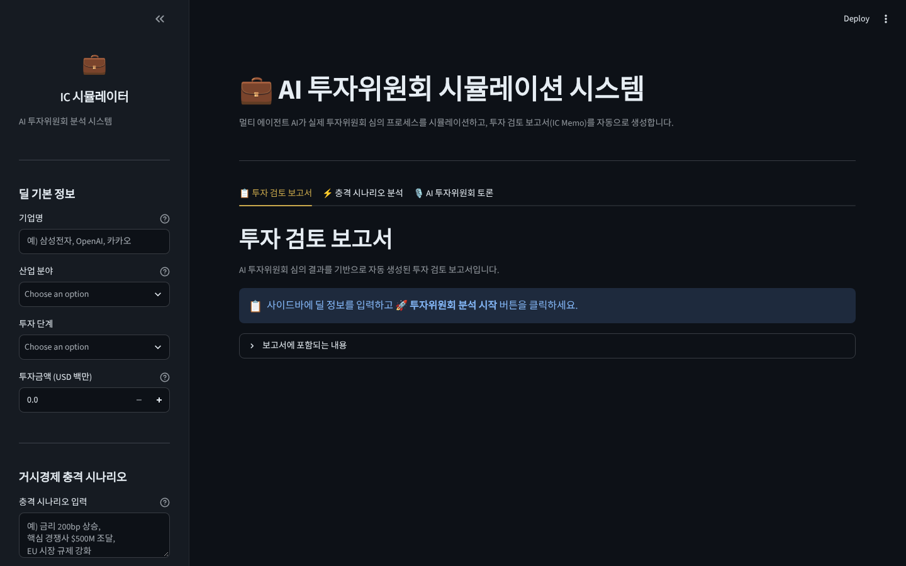
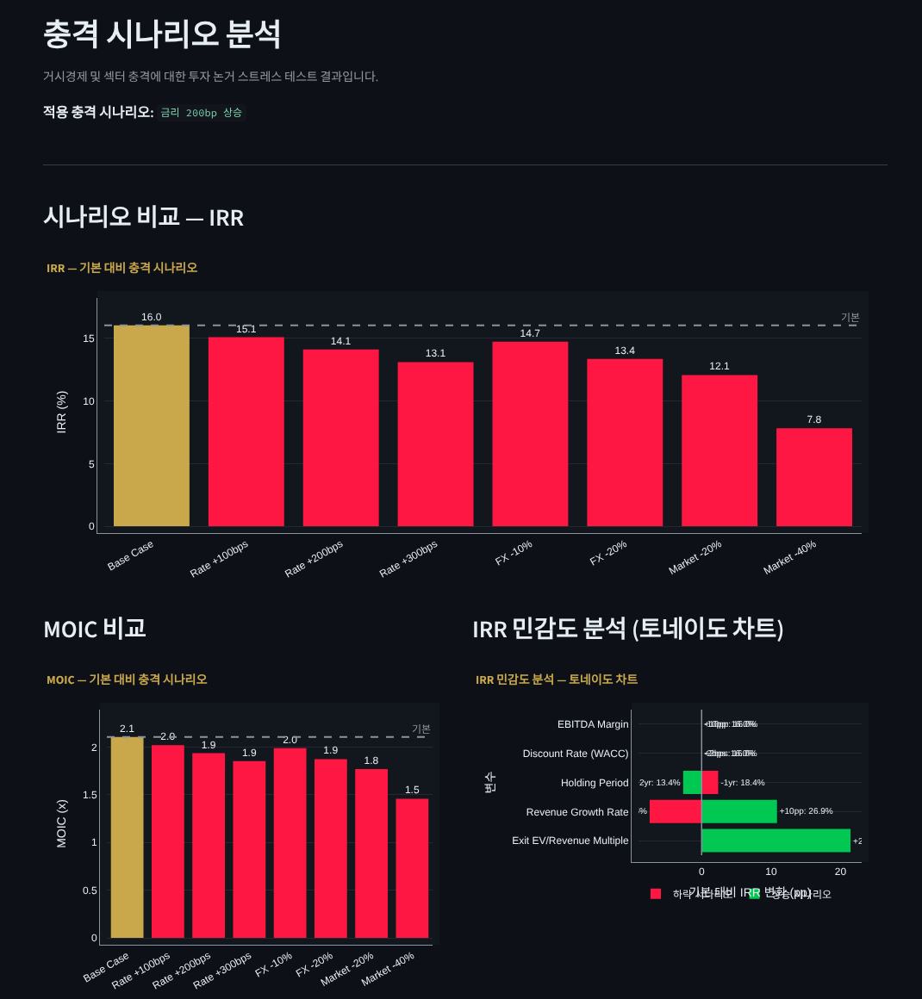
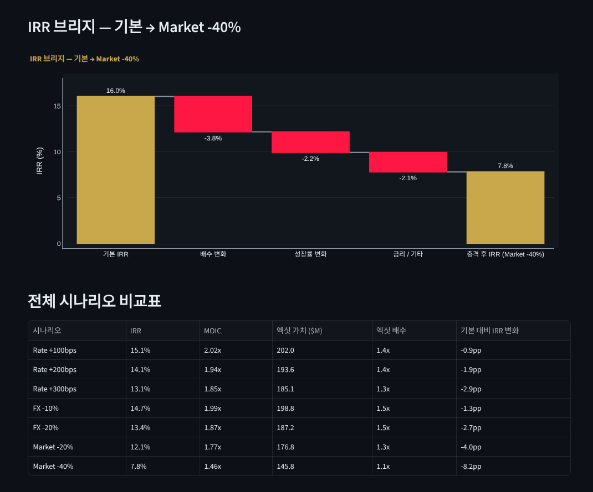

공모전 출품 · 개인 프로젝트
AI 투자위원회 시뮬레이션 · IC Memo 자동 생성
여러 AI가 실제 투자위원회처럼 역할을 나눠 토론하고, 공시 데이터와 충격 시나리오 계산을 근거로 투자 검토 보고서(IC Memo) 초안을 자동으로 만드는 시스템입니다. 기획부터 구현까지 혼자 진행했습니다.
01 / BACKGROUND
문제 배경
투자사는 큰 금액을 투자하기 전에 투자위원회(Investment Committee, IC)를 엽니다. 재무 분석, 리스크 심사, 찬반 토론을 거쳐 위원장이 결정을 내리는데, 공시 자료 수집부터 재무 모델과 보고서 작성까지 수 주가 걸립니다. 담당자 한 명의 관점에 치우치기 쉽고, 금리 인상이나 경기 침체 같은 시나리오를 매번 따로 계산하기도 번거롭습니다.
이 프로젝트는 여러 관점의 검토를 AI 에이전트로 나눠 맡기고, 숫자는 코드로 계산하고, 주장에는 공시 근거를 붙이는 방식으로 보고서 초안 작성 시간을 줄이는 것을 목표로 했습니다. 최종 판단은 사람이 하고, 시스템은 초안과 다각도 검토를 돕는 도구로 설계했습니다.
02 / SYSTEM
시스템 구성
기업명, 산업, 투자 금액, 충격 시나리오를 입력하면 아래 순서로 처리됩니다.
① 공시 수집 · 기업 분류
OpenDART API로 사업보고서와 재무제표를 가져오고, 기업을 초대형 상장사부터 스타트업까지 5단계로 분류해 유형에 맞는 수익률 가정을 적용합니다.
② Hybrid RAG
의미 기반 검색(ChromaDB + BGE 임베딩)과 키워드 검색(BM25)을 RRF로 합쳐 근거 문서를 찾고, 에이전트가 출처를 인용하게 합니다.
③ 6개 에이전트 토론
LangGraph로 데이터 수집·재무 분석·리스크·강세론·약세론 에이전트를 병렬로 실행하고, 위원장 에이전트가 투표를 종합해 결정합니다.
④ 충격 시뮬레이션 · 보고서
금리·환율·시장 충격 7개 시나리오의 IRR·MOIC를 계산하고, 결과를 6개 섹션의 IC Memo로 묶어 Markdown·JSON·PPTX로 내보냅니다.

03 / SIMULATION
충격 시뮬레이션 실행 예시
충격 시뮬레이션은 LLM 없이 코드로만 계산합니다. 아래는 삼성전자, 투자금 1억 달러 조건을 넣었을 때의 결과입니다. 시스템이 이 기업을 초대형 상장사로 분류해 기본 IRR 16.0%, MOIC 2.1x가 나왔고, 시장 40% 하락 시나리오에서는 IRR이 7.8%까지 떨어집니다.


스크린샷은 프로젝트 코드의 기업 분류·충격 시뮬레이션 모듈을 실제로 실행해 만든 화면입니다. 이 실행에서는 DART 연동과 LLM 에이전트를 끄고 기업 유형별 기본 가정만 사용했습니다.
04 / KEY DECISIONS
개발하며 바꾼 설계
- 계산은 코드, 해석은 AI. 처음에는 LLM에게 IRR 계산을 맡겼는데 값이 부정확했습니다. 그래서 IRR은 Newton-Raphson 방식으로 코드에서 계산하고, 에이전트는 그 숫자의 의미만 해석하도록 역할을 나눴습니다.
- 기업 유형별 가정. 모든 기업에 같은 스타트업 가정을 쓰자 삼성전자에서 IRR 72%, MOIC 15x라는 비현실적인 값이 나왔습니다. 기업 분류 레이어를 추가하고 DART 영업이익률로 EBITDA 마진을 보정해 IRR 약 16%, MOIC 2.1x 수준으로 바로잡았습니다.
- 검색 데이터 격리. 삼성전자를 분석하는데 데모용 가상 기업 문서가 검색 결과에 섞여 들어왔습니다. 기업명 메타데이터로 필터링해 다른 회사 데이터가 근거로 쓰이지 않게 했습니다.
- 신중한 표현. 프롬프트를 v2.0으로 개편해 모든 출력을 한국어로 통일하고, "~일 가능성이 있습니다" 같은 확률적 표현을 쓰도록 했습니다. 위원장 에이전트에는 밸류에이션, 거버넌스, 투자 중요성, 전략적 적합성의 4대 판단 기준을 넣었습니다.
05 / LIMITATIONS
한계와 개선 방향
- 공시 데이터가 부족한 기업에서는 에이전트가 추정치를 사실처럼 서술할 수 있어, 모든 출력은 사람이 검토해야 합니다.
- 충격 모델은 금리·환율·시장 3가지 변수만 다루고, 소수 지분 투자의 유동성 할인 같은 요소는 반영하지 않습니다.
- 사용자가 자유롭게 쓴 충격 시나리오 문장은 아직 계산 파라미터로 변환되지 않고, 미리 정한 7개 시나리오가 실행됩니다.
- 개선 방향: 실시간 시장 데이터와 뉴스 연동, 자유 입력 시나리오의 파라미터화, 업종별 분석 템플릿, LLM 출력 팩트체크